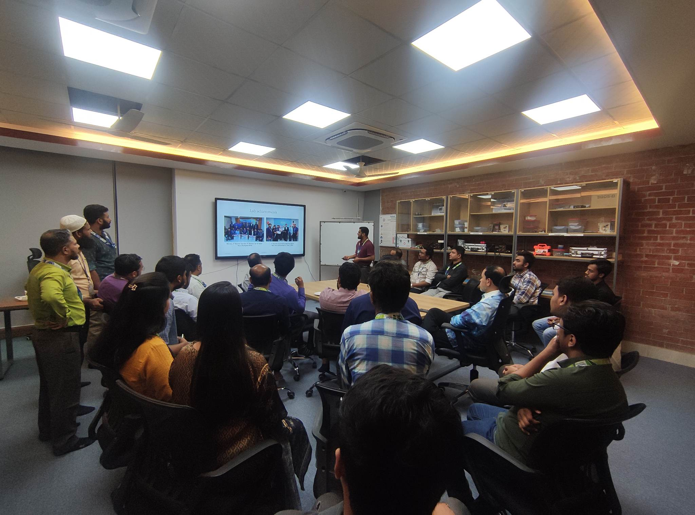
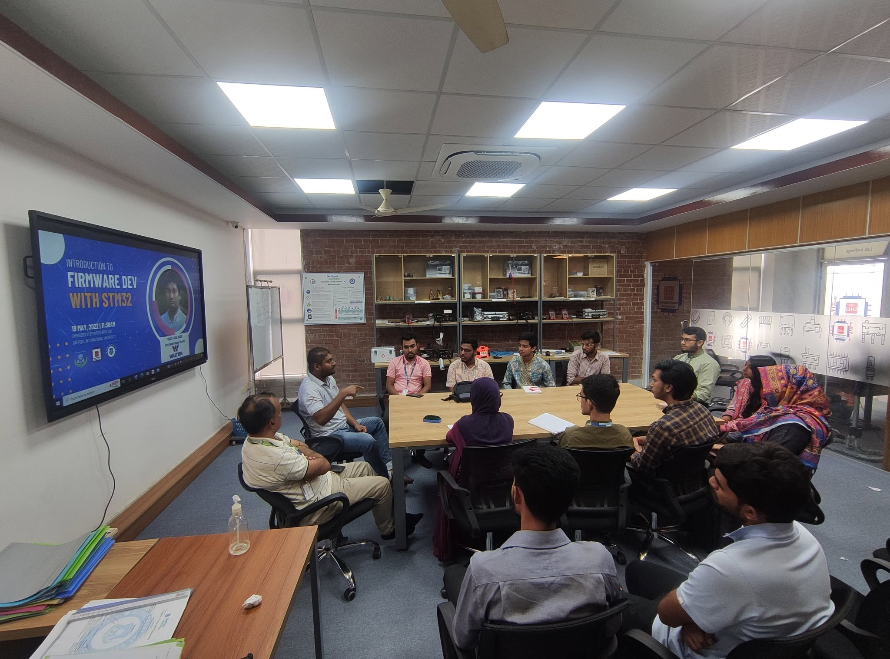
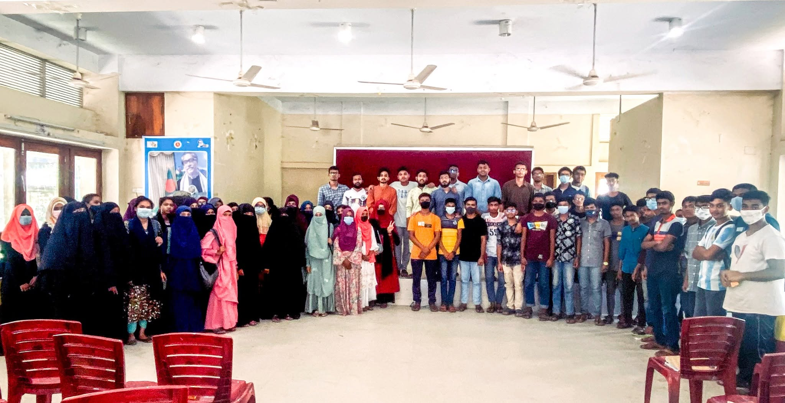
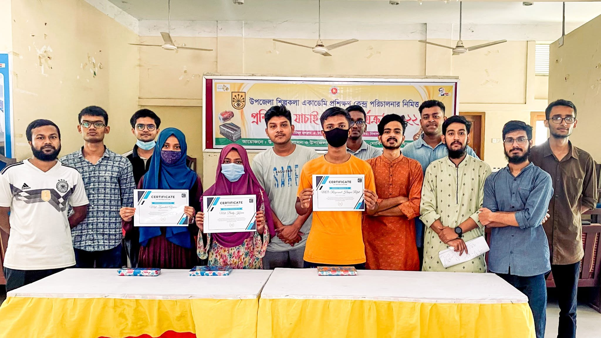
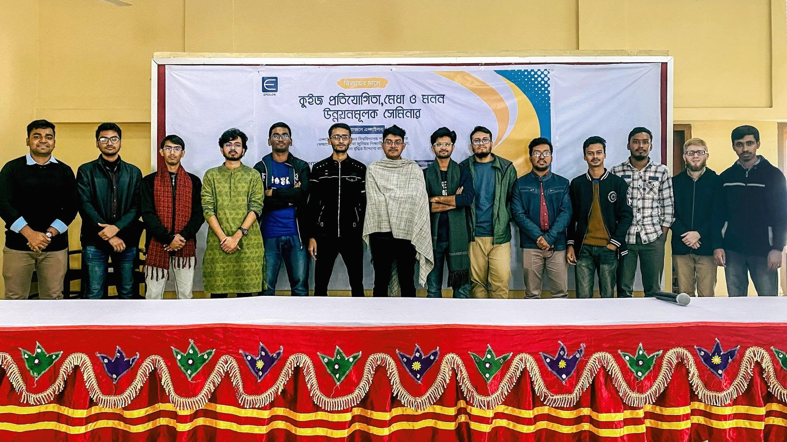

About Me
Education, skills and experience
Who I Am
I am a dedicated and research-driven Computer Science and Engineering undergraduate at Daffodil International University, Dhaka. I enjoy solving problems with code and I am currently doing computer vision research on a government-affiliated project. My long-term goal is to use technology to create a meaningful impact on society.
Education
My academic background.
| Degree | Institution | Result |
|---|---|---|
| B.Sc. in Computer Science & Engineering | Daffodil International University, Dhaka | Ongoing |
| HSC (Science) | Adamjee Cantonment College, Dhaka | GPA 5.00 / 5.00 |
| SSC (Science), 2018 | Gobindaganj Govt. High School | GPA 5.00 / 5.00 |
Technical Skills
C / C++
Python
Java
HTML, CSS & JavaScript
MySQL
Other Tools
- Adobe Photoshop and Adobe Illustrator
- Microsoft Office (Word, PowerPoint) and Google Workspace
- Prompt engineering with LLMs (ChatGPT, Claude) for research and productivity
- Windows operating system
Leadership & Volunteering
- Organizing Secretary – DIU Embedded System Research Lab
- Founding Member – Epsilon
- Executive Member – Twenty Ten Foundation
- Founding Member – Adamjee Eco Amica Club (Batch 2020)




